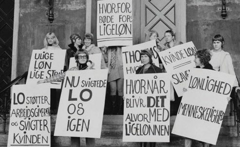
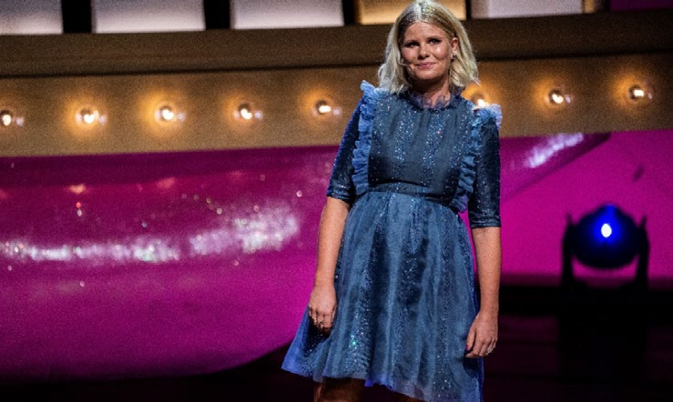

6.15 – LIGESTILLING MELLEM KØNNENE
sidde 234
Kønnene
Ligestilling mellem mænd og kvinder er i dag en af det danske samfunds grund værdier. Sådan har det ikke altid været. Der er stadigvæk udfordringer, men der er klart blevet mere ligestilling mellem de to køn i Danmark de sidste 150 år.
Det skyldes ikke mindst kvindebevægelsens kamp for, at kvinder skulle have samme rettigheder som mænd og for at ændre samfundets traditionelle syn på kønsroller, for eksempel om manden skal bestemme over kvinden, eller om kvinder kan have seksuelle relationer før ægteskabet.
En ting er, at mænd og kvinder stort set har fået lige rettigheder og pligter i vores samfund. Noget andet er, at mænd og kvinder fortsat klarer sig forskelligt på en række vigtige områder.
Ligeløn
Et af de vigtigste spørgsmål inden for ligestilling har været kampen for ligeløn. I 1914 tjente mænd, som arbejdede i industri eller håndværk, i gennemsnit 55 øre pr. arbejdstime og kvinder kun 30 øre. Og kvindelige lærere måtte indtil 1919 nøjes med to tredjedele af de mandlige læreres løn. Lønforskellene mellem mænd og kvinder er gradvis blevet mindre de sidste 100 år.Kvinder demonstrerer
Kvinder demonstrerer for ligeløn omkring 1970.
Læremateriale Til Indfødsretsprøven

sidde 235
En milepæl på vejen var, da Folketinget i 1976 efter krav fra EF (det nuvæ rende EU) vedtog lov om lige løn for samme arbejde. Men der mangler stadig lidt. I 2022 tjente kvinder i gennemsnit 12 procent mindre end mænd i timeløn på hele arbejdsmarkedet. Beregninger, der tager højde for kvinders og mænds forskellige niveau af for eksempel uddannelse, erhvervserfaring og branche og arbejdsfunktion viser typisk en forskel i timeløn på 4-7 procent.
At forskellen er blevet mindre skyldes især, at mændene over de sidste årtier er sakket bagud i forhold til kvinder, når det gælder uddannelse. Begge køn er bedre uddannet end før, men udviklingen er mest kommet kvinderne til gode. I 1960 fuldførte cirka fem procent af kvinderne og 16 procent af mændene på en årgang en videregående uddannelse (det vil sige over gymnasieniveau). I 2023 er det cirka 64 procent af kvinderne og 45 procent af mændene.
Derudover er der kommet flere kvindelige ledere, selv om de fortsat er i mindretal. I 2025 var andelen af kvindelige ledere på det danske arbejdsmarked 32 procent. På det øverste ledelsesniveau er andelen dog mindre – blandt medlemmer af virksomhedernes bestyrelser udgør kvinderne 19 procent og 16 procent af direktørerne.
Der er dog en markant større andel af kvindelige ledere i den offentlige sektor sammenlignet med den private sektor.
En stor del af den forskel i løn, der er tilbage, skyldes, at der trods alt stadigvæk er flest mandlige ledere, og at mænd og kvinder arbejder i forskellige fag. Forskellen i løn mellem de forskellige faggrupper i den offentlige sektor blev bestemt for over 50 år siden. Det vil sige i en tid, hvor samfundet stadigvæk så mindre ligeværdigt på de to køn end i dag. Derfor er nogle af de traditionelle ”kvindefag” (for eksempel pædagoger og SOSU-hjælpere) placeret væsentligt lavere end de typiske "mandefag" (for eksempel politibetjente).
Der er dog uenighed om nøjagtig hvor meget, der endnu mangler, før der er ”lige løn for samme arbejde”. Det skyldes, at det i praksis er svært at vurdere, hvornår arbejde er ’det samme’ – det vil sige, præcis hvilken værdi forskellige faggrup pers og forskellige medarbejderes arbejde skaber.
Læremateriale Til Indfødsretsprøven
sidde 236
Barsel
Et yderligere vigtigt spørgsmål om ligestilling drejer sig om barselsorlov. I 2002 kom den nuværende lovgivning med 52 uger i alt – fire uger før og 14 uger efter fødslen til moderen og to uger til faderen i forbindelse med fødslen. Af de reste rende 32 ugers forældreorlov skal far og mor hver tage mindst ni uger hver. De øvrige 14 uger kan herefter frit fordeles mellem forældrene. I praksis er det dog fortsat kvinderne, som tager langt størstedelen (i gennemsnit cirka 80 procent) af orloven, mens mænd tager cirka 20 procent.
Forskellen gør, at kvinderne på grund af deres fravær fra arbejdspladsen ikke stiger så meget i løn, som mændene gør. Omvendt har mændene har mindre tid med deres børn. Noget af denne forskel vil formentlig rette sig fremover.
Seksuelle Krænkelser
I 2017 bredte der sig via sociale medier og hashtagget #Me-Too (også mig) en ny international bevægelse, den såkaldte Me-Too-bevægelse. Bevægelsens angrebsmål var seksuelle krænkelser og chikane. Anledningen var en række anklager fra flere kvinder i den amerikanske filmbranche om overgreb. Dem var der mange af, skulle det vise sig. Hurtigt bredte bevægelsen sig til mange lande, hvor kvinder stod offentligt frem med, at de også havde været ude for lignende oplevelser.
Læremateriale Til Indfødsretsprøven
sidde 237
Tv-vært Sofie Linde. Foto: Martin Sylvest/Ritzau Scanpix.
Tv-vært Sofie Linde. Foto: Martin Sylvest/Ritzau Scanpix.
I Danmark slog bevægelsen først for alvor igennem i 2020, efter at tv-værten Sofie Linde i et gallashow med prisuddeling til komikere begyndte at tale om noget helt andet end komikere, nemlig om sine egne oplevelser inden for tv-branchen med sex-chikane og krænkelser. Det blev en gnist, der tændte en stor brand. For derfra gik udviklingen stærkt. For der var mange, der havde lignende oplevelser – ikke mindst i mediebranchen, filmbranchen, musikbran chen, kulturlivet og i det politiske liv. Det medførte, at fremtrædende politikere blev tvunget til at træde tilbage, og at kendte mediepersoner mistede deres job. Seksuelle krænkelser og chikane findes også mange andre steder, men det er mindre synligt, når det foregår i mindre profilerede brancher.
Det kan for eksempel være butiksassistenter, SOSU-assistenter eller sygeplejer sker. Når seksuelle krænkelser begås af ledere eller folk i overordnede stillinger, handler det også om magt, fordi medarbejderne – af frygt for deres karriere – kan synes, at det er svært at sige fra. Blandt andet derfor har fagbevægelsen også fået fokus på seksuelle krænkelser. Et af resultaterne er, at mange arbejds pladser arbejder med at ændre kulturen på arbejdspladsen, gøre det lettere for medarbejdere at anmelde krænkerne og slå hårdere ned på krænkelser, når de sker.
I 2021 er en såkaldt samtykkebaseret lovgivning om voldtægt trådt i kraft. Den har til formål bedre at beskytte personer mod uønsket sex. Som loven var indtil da, var det voldtægt, hvis der blev brugt vold, trusler om vold eller anden ulovlig tvang. Eller hvis et samleje blev gennemført, selv om offeret var ude af stand til at sige nej (for eksempel var bevidstløst). Med den nye lov kan der også straffes for voldtægt, hvis samlejet gennemføres, uden at begge parter har givet samtykke, selv om der for eksempel hverken er brugt vold eller trusler. Et samtykke betyder ikke, at begge parter skal sige ”ja”. Et samtykke til samleje kan komme til udtryk både ved ord og handling.
Læremateriale Til Indfødsretsprøven

Fonte: Læremateriale til Indfødsretsprøven, SIRI.